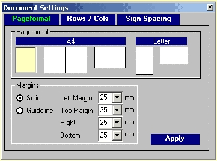
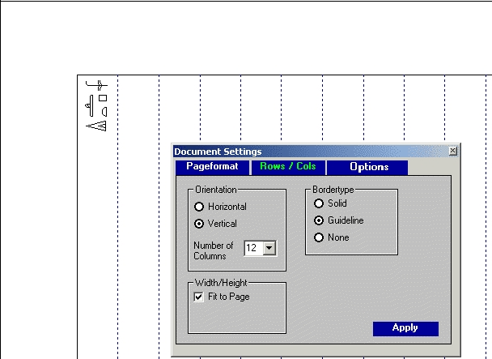
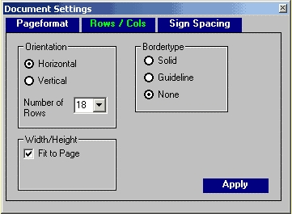
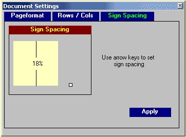

3. Document Settings
Document settings are specific for each document and are stored together with them in a file with the extension <.IG>.
3.1. Pageformat

Fig.3.1
The pageformat frame shows five formats: A4-Standard, A3, A4-Landscape and US Letter. The default is set to A4-Standard. To change the format click on one of the three formats. The selected format will appear as sunk and yellow. Click on <Apply> to change the format of the writing area. The format A3 will be printed as two A4-Standard pages but is treated on the screen as one page. So you can easily move objects from the left to the right side and vice versa.
If you start the program by default a solid margin frame with all margins set to 25mm is shown. These margins are printed if not otherwise defined. To change the width or height of these margins select a new value with the help of the four comboboxes. If the margin frame is not to be printed, click on the option button <Guideline>. Margins will then appear in the writing area as a blue dashed line. Press <Apply> to execute.
3.2. Rows / Columns
With this register you define columns or rows that will be shown inside the margin frame, see Fig. 3.2. They are shown in the background and do not limit cursor positioning. This means that your writing direction does not depend on these rows or columns. You can write in any direction whatsoever and overwrite the blue row or column demarcation lines.

Fig.3.2
You have several options for defining rows or columns:
Orientation: Depending on the writing direction the user can define horizontal or vertical lines and the number of lines.
Width/Height: The default is <Fit to Page>. This means that the program calculates the height of the rows, or the width of the columns, between the page margins. If you click on the <Fit to Page> checkbox a further combobox appears and the user can define the width (or height) of the columns (or rows).
Bordertype: Three options can be selected. The <Solid> type means that the lines appear in black and are printed, <Guidelines> are shown dashed and blue and are not printed, <None> means that no lines are shown.

Fig 3.3
#K3.3. Sign Spacing

Fig.3.4
Sign Spacing
If you type a hieroglyphic group and press <Enter>, the blinking cursor jumps to the next writing position and you can go on writing the next group without setting the cursor. By default a gap of 16% width compared to the height of a font sign is created between two groups of signs. To change this value:
- move the cursor over the small white square. It will change its form to a horizontal cursor. You can move this square with the left mouse button to the left or to the right
- use the left or right arrow key
Values between 1% - 45% can be choosen. 1% means no gap between groups whereas 45% creates a very large gap. Press the <Apply> button to execute.